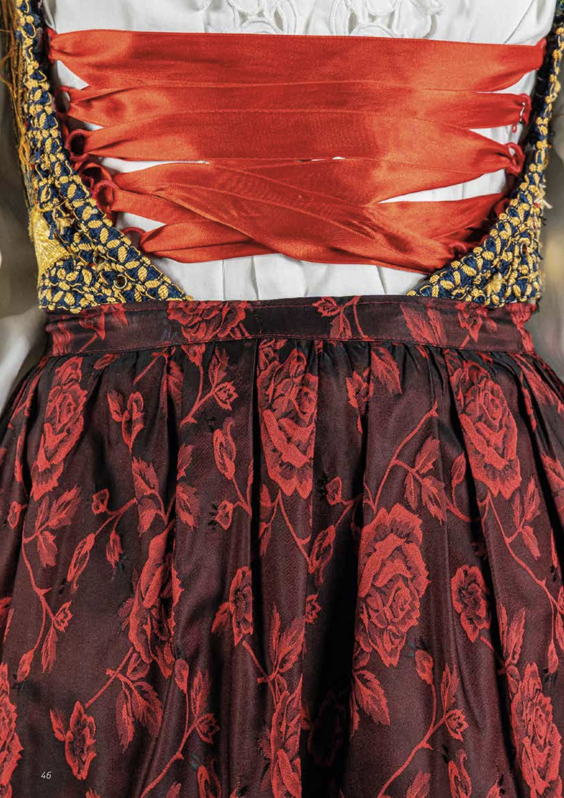

BISTÌRIS
Ontology & Knowledge Graph for Sardinian Traditional Costumes
A domain ontology and a curated knowledge graph to describe, compare, and analyse traditional Sardinian costumes and their parts, materials, colours, and provenance. The project supports cultural heritage documentation, enables semantic search and reasoning on costume‑features across regions and eras, and opens new avenues for education, tourism and heritage valorisation.
Last updated: October 2025

Abstract
BISTÌRIS provides a semantic framework and an associated Knowledge Graph for representing traditional Sardinian costumes through geographical, temporal, and stylistic parameters. It enables researchers to identify recurring patterns, compare garments across regions and historical periods, and reveal cultural relationships hidden in dispersed data sources. By offering a formal and interoperable ontology together with the KG, BISTIRIS supports advanced analysis, including the study of material characteristics, colour usage, and costume layering. The project improves digital accessibility and semantic interoperability, facilitating the documentation and preservation of intangible heritage while opening opportunities for cultural tourism, education, and open data reuse. Although developed for Sardinia, BISTIRIS can be adapted to other Mediterranean dress traditions, providing a reusable framework for comparative studies and cross-regional heritage initiatives.
Key Features
Domain Ontology
Covers garments, parts, materials, colours, techniques, and provenance with explicit relations and constraints.
Knowledge Graph
Curated entities and links to images and references; export in Turtle/OWL for reuse and extension.
Semantic Queries
Ready-to-use SPARQL examples to retrieve garments by area, part, material, and colour palettes.
Interoperability
Mappings and alignments to facilitate integration with CH datasets and digital collections.
Extensibility
Modular classes and properties to add new municipalities, garments, parts, and controlled vocabularies.
Reproducible
Scripts/notebooks (in repo) to regenerate the KG from cleaned sources and normalization tables.
Ontology & Knowledge Graph
The ontology defines core classes such as Costume, Garment, TechnicalCharacteristic, Colour, and Place, along with properties including hasPart, madeOf, hasColour, usesTechnique, and originatesFrom. Integrity constraints and recommended controlled vocabularies enhance data quality and support reliable reasoning.
The KG instance data describe garments and their attributes, supported by controlled vocabularies and metadata for colours and materials.
Example fragment (Turtle)
@prefix bistiris: <https://aimet-lab.github.io/BISTIRIS#> .
@prefix dcterms: <http://purl.org/dc/terms/> .
@prefix schema: <http://schema.org/> .
@prefix dbpedia: <http://dbpedia.org/resource/> .
@prefix yago: <http://yago-knowledge.org/resource/> .
@prefix a-lite: <https://aimet-lab.github.io/BISTIRIS#a-lite/> .
@prefix xsd: <http://www.w3.org/2001/XMLSchema#> .
@prefix rdf: <http://www.w3.org/1999/02/22-rdf-syntax-ns#> .
<https://aimet-lab.github.io/BISTIRIS#DVV0056>
a bistiris:"F-Garment",
bistiris:"F-Skirt",
bistiris:Garment,
bistiris:Gheroni_skirt ;
dcterms:source <https://aimet-lab.github.io/BISTIRIS#IDVV0052> ;
schema:fromLocation dbpedia:Bitti ;
schema:fromLocation yago:Bitti ;
schema:isPartOf <https://aimet-lab.github.io/BISTIRIS#DVV0052> ;
a-lite:hasColour dbpedia:Black,
dbpedia:Blue,
dbpedia:Green,
dbpedia:Purple,
dbpedia:Red,
dbpedia:Yellow ;
bistiris:embroideries "true"^^xsd:boolean ;
bistiris:floral_embroideries "true"^^xsd:boolean ;
bistiris:màsculas "true"^^xsd:boolean ;
bistiris:technical_details "true"^^xsd:boolean ;
schema:dateCreated "1900/.." .
SPARQL — Example Queries
Geographical Patterns in Headwear Types
SELECT ?category ?type (COUNT(?garment) AS ?count)
WHERE {
?garment a bst:M-Headwear ; a ?type ;
schema:fromLocation ?place .
?place dbo:elevation ?elev .
BIND(IF(?elev > 600, "Elevation > 600 m", "≤ 600 m") AS ?category)
}
GROUP BY ?category ?type
Colours by Period
SELECT ?period ?colourCat (COUNT(?colourCat) AS ?count)
WHERE {
?g a bst:Garment ; a-lite:hasColour ?c ; schema:dateCreated ?d .
?c a ?colourCat ; rdfs:subClassOf dbo:Colour .
BIND(IF(STRSTARTS(STR(?d),"18"),"19th c.","20th c.") AS ?period)
}
Covering Garments by Location
SELECT ?garment ?place
WHERE {
?garment a bst:F-Bodice ;
bst:covers ?otherGarment .
?otherGarment a bst:F-Jacket ;
schema:fromLocation ?place .
}
Layered Garments
SELECT ?garment ?type ?place
WHERE {
?garment bst:coversWithTransparency ?other ;
a ?type ; schema:fromLocation ?place .
}
Try these at the SPARQL endpoint.
Resources
Repository
Provides access to the ontology, the Knowledge Graph datasets, and supporting resources.
Downloads
Download the ontology and the Knowledge Graph in standard formats.
Documentation
Background materials describing data provenance, modelling rationale, and examples of reuse:
Cite & Publications
- Pandolfo, L., Corona, G., Guidotti, D. et al. BISTÌRIS Knowledge Graph (2.0), 2025.
DOI: 10.5281/zenodo.15310350 . - Corona, G., Guidotti, D., Pandolfo, L. et al. BISTÌRIS Ontology: Towards a Structured Representation of Sardinian Traditional Female Costumes. In SemDH@ESWC.
Team & Contacts
Team: Artificial Intelligence and formal METhods Laboratory, University of Sassari
Contact: aimetlab@uniss.it
Contact Person: Laura Pandolfo — lpandolfo@uniss.it

Funding
This work has been developed within the framework of the project e.INS- Ecosystem of Innovation for Next Generation Sardinia (cod. ECS 00000038) funded by the Italian Ministry for Research and Education (MUR) under the National Recovery and Resilience Plan (NRRP) - MISSION 4 COMPONENT 2, “From research to business” INVESTMENT 1.5, “Creation and strengthening of Ecosystems of innovation” and construction of “Territorial R&D Leaders”.